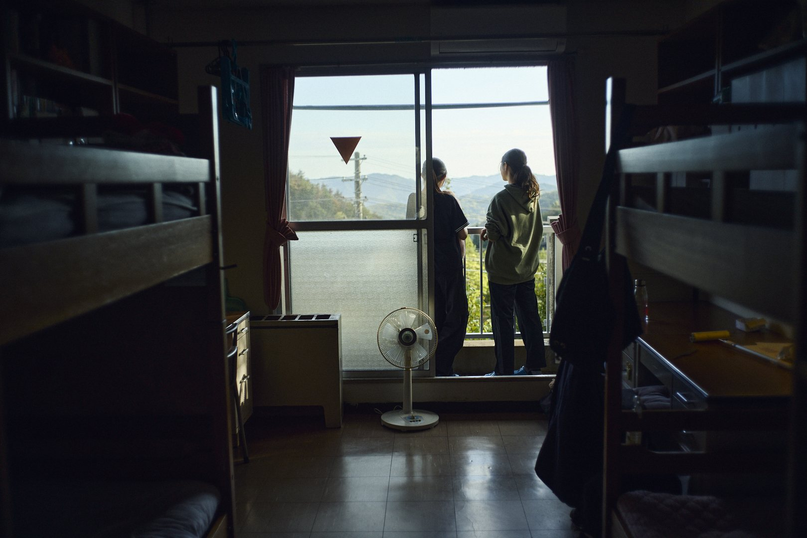
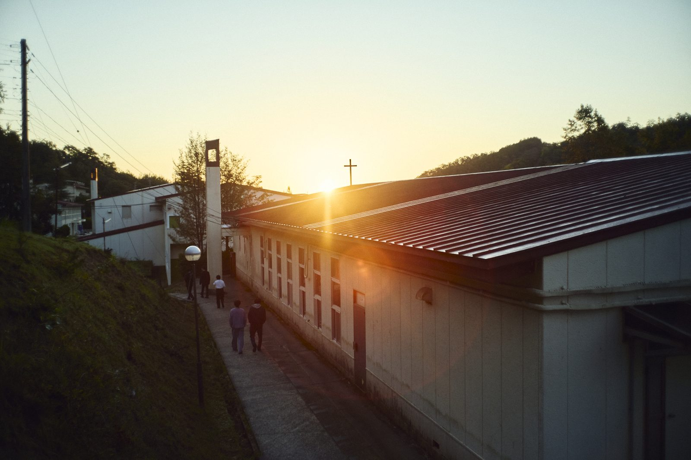
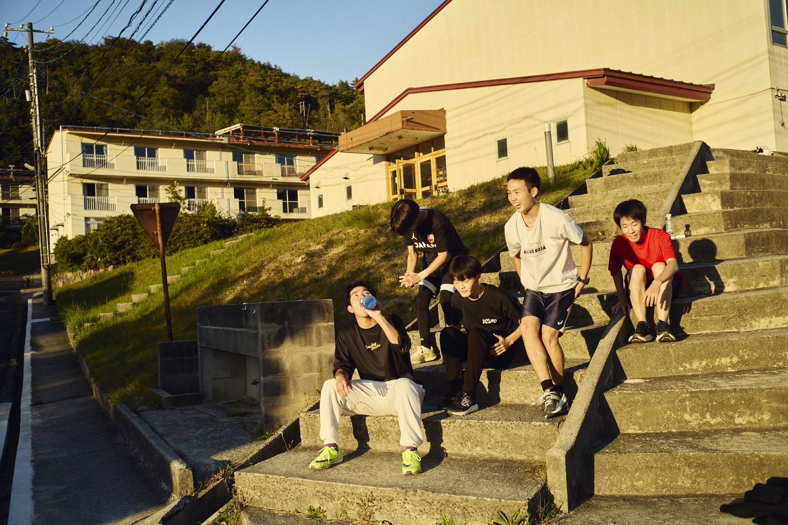

生きるを、
育む。
To Live, To Grow
広島三育学院中学校・高等学校｜全寮制・男女共学・キリスト教主義
PROLOGUE
正解のない時代に、
正解のない時代に、
どう生きるのか。
AIが答えを出してくれる時代に、知識だけでは足りない。必要なのは、自分の軸を持って生きること。
親元を離れ、仲間と暮らし、土に触れ、祈り、問いを立てる。中学からの6年間も、高校からの3年間も、その軸を育てる時間です。

FOR YOU
こんな気持ち、ありませんか？
中学生・小学生のみなさんへ
- スマホを見ていたら1日が終わっていた。このままでいいのか、なんとなく不安
- 勉強の意味がわからない。でも、何かを変えたいとは思っている
- 都会じゃなくていい。自然の中で、本気で生きてみたい
- 勉強もスポーツも人間関係も、中途半端にしたくない
保護者のみなさまへ
- 「宿題やったの？」が、口ぐせになっている
- スマホばかりで、家族の会話が減った
- 子どもに「いい大学」より先に、「いい人間」になってほしい
- 離れて暮らすことで、親子の距離が縮まるとしたら
全寮制×全人教育にしか、できないことがあります。
4 SCENES
暮らす、学ぶ、動く、根を張る。
4つの品性（知性・身体性・霊性・社会性）は、毎日の4つの場面で育ちます。4つは別々のものではなく、一つの生活です。


IN NUMBERS
数字で見る、広島三育学院。
1:8教師と生徒の比率。一人ひとりに目が届く少人数教育
8割以上の生徒が聖歌隊・ハンドベル・ブラスバンドに所属
8–9割大学・専門学校への進学率。進路は“高さ”より“幅”で
1977広島に開校。2027年に開校50周年を迎えます
FOR PARENTS
「管理する親」から
「管理する親」から
「見守る親」へ。
変わったのは、子どもだけではありませんでした。口出しが減り、信じて待てるようになった。離れて暮らすからこそ、親子の関係も育ちます。
「寮なんかに入れて寂しくないの？とよく言われるけれど、こんな経験をプレゼントしてあげられることを誇りに思っています。」
高2保護者（アンケートより）
FROM HIGH SCHOOL
高1の3人に2人が、
高1の3人に2人が、
高校から寮生活をスタート。
広島三育学院中学校からの進学者に加え、系列の沖縄三育中学校、系列外の中学校から生徒が集まり、高1から一緒に寮生活を始めます。高校から入学しても、輪の外になることはありません。
2026年度 高校入学生（35名）の出身中学校
広島三育中沖縄三育中その他の中学校
「みんな話しやすく、兄弟のように関われた。」高1生徒
INVITATION
読むだけでは、三育はわからない。
ひとつでも気になったら、一度キャンパスへ。見学も、宿泊体験も、相談だけでも大丈夫です。